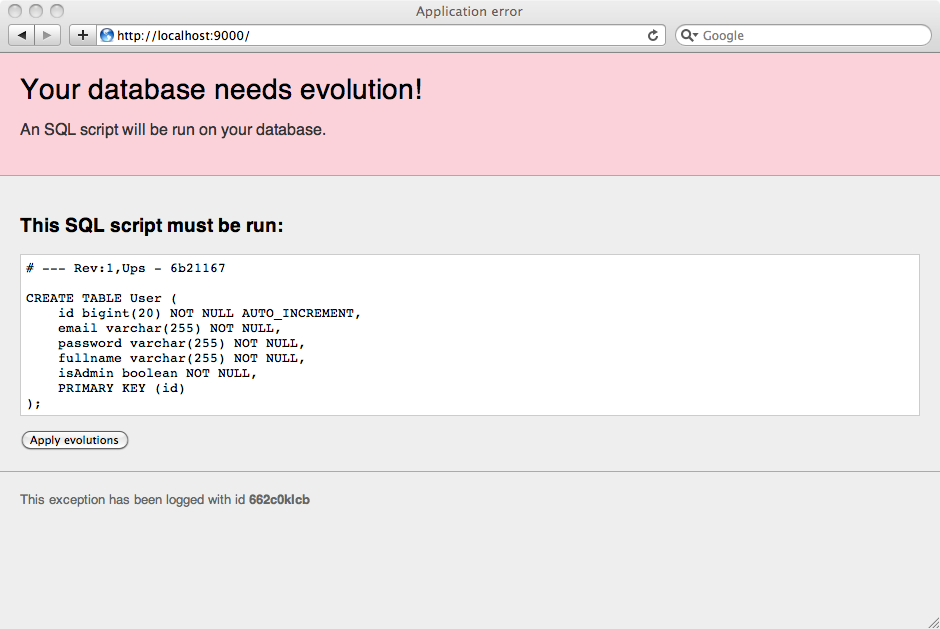

Play 1.2 — Release notes
You can read about the bugs fixed in Play 1.2 on the road map page. This page highlights the most important changes.
Migrating from Play 1.1.x
Migrating from Play 1.1.x is pretty straightforward. There are no changes to the application layout, so your applications will run in Play 1.2. However, if you use any external modules in your application, you may have to use more recent versions that are compatible with Play 1.2. Check the corresponding module pages.
Some APIs have been removed in Play 1.2, after having been deprecated for a long time, but most of the public API is the same. If you have compilation errors that you don’t know how to solve, ask on the Google group.
When you call a controller from a FunctionalTest, the action invocation now runs in its own transaction. Because the test itself also run in its own transaction, deadlocks can occur. So it’s better to configure your database with READ_UNCOMMITED transactions while running tests. If you test again the in-memory H2 database, use the following database configuration:
%test.db.url=jdbc:h2:mem:play;MODE=MYSQL;LOCK_MODE=0@
If you can’t use READ_UNCOMMITED for your database transactions, you need to run every JPA access it their own transaction, either by managing JPA transaction by hand (using JPA.em().getTransaction()) or by spawning invocations using Jobs.
Dependency management
Play’s dependency management system allows you to express your application’s external dependencies in a single dependencies.yml file.
A Play application can have three kinds of dependencies:
- The Play framework itself, since a Play application always depends on the Play framework.
- Any Java library, provided as JAR file installed in your application’s
lib/directory. - A Play module (in fact an application fragment) installed in your application’s
modules/directory.
Once you have expressed these dependencies in your application’s conf/dependencies.yml file, Play will resolve, download and install all required dependencies.
For example, using this file:
# Application dependencies
require:
- play
- com.google.guava -> guava r07
- play -> pdf 0.2
You can run `play dependencies`:
Under the hood it is powered by Apache Ivy, and it supports Maven compatible repositories.
Better asynchronous features
It was already possible to achieve asynchronism with Play 1.1 using Java Future and waitFor(…) and suspend(…) controller methods. However these primitives were not really easy to use. That’s why we’ve worked on a complete set of new coherent features for Play 1.2.
Promises
In Play 1.2 we introduce Promise, which is Play’s custom Future type. In fact a Promise<T> is also a Future<T> so you can use it as a standard Future. However, it also has a very interesting addition: the ability to register callback using onRedeem(…) that will be called as soon as the promised value is available. It allows the framework to register itself on them and to reschedule the request invocation as soon as possible.
play.libs.F
The Promise type is part of new library (play.libs.F) that introduces several useful functional programming constructs. We also felt that we needed pattern matching in Java. Unfortunately Java has not built-in pattern matching, and because of the lack of functional constructs, it is difficult to add it as a library. Anyway we’ve worked on a solution that is not so bad.
await(…)
When your application code returns values that are not yet available using a Promise<T>, you want to be able to ask Play to wait for this promised result to be available before resuming your request. It allows your code to say explicitly:
“I’m waiting for a result that will be available later”
and so the framework to handle it as
“Ok I will stop your code, reuse the thread to serve other requests, and resume your code as soon as the promised value you wait for is available”.
Continuations
Because the framework needs to recover the thread you were using in order to use it to serve other requests, it has to suspend your code. In the previous Play version, the await(…) equivalent was waitFor(…), which suspended your action, and then recalled it later from the beginning.
To make it easier to deal with asynchronous code in Play 1.2 we have introduced continuations. Continuations allow your code to be suspended and resumed transparently.
Response streaming
Because you are able to loop without blocking the request, you may want to send data to the browser as soon you have part of the result available. This is the point of the Content-Type:Chunked HTTP response type. It allows to send your HTTP response several times using multiples chunks. The browser will receive these chunks as soon as they are published.
WebSockets
WebSockets are a way to open a two-way communication channel between a browser and your application. It is now supported by your Play application.
New Chat sample application
All these features are used in the new Chat sample application, which demonstrates how to achieve a standard chat application in three different ways:
- Active refresh
- Ajax with long polling
- WebSockets
Routes file improvements
The routes file now supports a set of new features. Also you can now safely use { and } characters in a route path regular expression.
staticFile: mapping
Like the old staticDir mapping, you can now directly map a URL path to a static file rendering.
# Serve index.html static file for home requests
GET /home staticFile:/public/html/index.html
404 as action
You can now directly use 404 as a route action to mark a URL path that must be ignored by your application. For example:
# Ignore favicon requests
GET /favicon.ico 404
WS method
The new WS method allows you to declare a route that is mapped to a WebSocket.
# A WebSocket
WS /chat/messages Chat.messages
You can use the @@{Chat.messages()} notation to generate the reverse URL, as:
ws://localhost:9000/chat/messages
Database evolutions
When you use a relational database, you need a way to track and organize your database schema changes. Play evolutions automatically track these changes and update your schema.

It will also resolve conflicts that occur when several developers work on the same application.
Invocation context annotations
Play maps each invocation (an HTTP request, a WebSocket message, or an asynchonous job execution for example) as an Invocation. You can now annotate any invocation with some annotations that can be used by plugins to change the way they handle this particular invocation.
For example, the JPA Plugin automatically opens a database transaction for each invocation if a database is configured. Now, if you don’t need a database connection for a particular invocation, you can annotate it with @NoTransaction:
@NoTransaction
public static void index() {
render();
}
Another annotation allows you to specify a read-only transaction for a particular invocation;
@Transactional(readOnly=true)
public static show(Long id) {
Post post = Post.findById(id);
render(post);
}
The concept of invocation context can be extended to any plugin.
H2 as default in-memory database
We are now using H2 Database as the in-memory database for Play. It is more compatible with production database like MySQL, so you will have fewer problems during deployment.
As a nice side effect, H2 provides a Web console, that you can launch using the /@db url of any Play application using db=mem as configuration.
Test-runner updates
There are several updates concerning the test-runner.
Run your JUnit-based test from any JUnit test runner
You can now run you Java test cases directly from any existing JUnit test runner, like the one provided in Eclipse.
Surefire reports
Now Surefire reports are generated for any Java test class you run, making it easier to integrate it with other continuous integration softwares.
YAML fixtures
You can now load your fixtures from several YAML files at once, and even use the template engine markup language in your YAML definitions to add some kind of dynamic data.
Several test IDs
You can also create more than one test configuration, by specifying a framework ID that matches test-*.
Cheat-sheets provided with documentation
The Play documentation now includes several Cheat sheets that provide a quick reference for the common Play functions. They can be easily printed.
Other small features
There are also some small new features as well as 130 fixed bugs, including:
- New
create()andvalidateAndCreate()methods for JPA model. - Added
--pid_file=,--http.port=,--https.port=command line options to theplaycommand. - Support for lang-country pair (e.g. en-GB)
- Binding of
Map<String, String>, with multivalues, composites, etc. - Ability to create your own CRUD
ObjectType. - play.lib.WS client now supports Timeout.
- Session cookies are no longer sent if the session is empty.